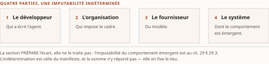

Chapitre 22Options d'orchestration et paradigme APM : la taxonomie OO1-OO4 et l'autonomie encadrée
Livre III — Encadrer : orchestration en entreprise, cadre réglementaire canadien et terrain financier. Premier mouvement — autonomie encadrée : orchestration en entreprise (ch. 22-24). Chapitre d'ouverture du Livre, et **chapitre à deux mouvements** issu de la fusion v0.20 : il porte deux thèses, deux lignes Fusion et deux tables de couverture, conservées intégralement (décision 11a du TOC)
Thèse du second mouvement, citée depuis le TOC v0.30, entrée du chapitre 22 (ancien ch. 26) — l'autonomie n'est pas l'automatisation ; elle se gouverne par des frames normatifs et opérationnels et quatre capacités (encadrement, explicabilité, actionnabilité conversationnelle, auto-modification).
Deux thèses pour un chapitre, et ce n'est pas une négligence de rédaction. Le ch. 22 est issu de la fusion v0.20 des anciens ch. 25 et 26 (décision 11 du TOC) : les deux entrées y sont conservées intégralement, en deux mouvements portant chacun son ancien titre et son ancienne thèse. Rien n'a été soustrait, et la présente pièce ne fond pas les deux thèses en une troisième — ce serait réécrire ce que la fusion s'interdisait de toucher.
Les deux thèses ont été collationnées contre le texte rédigé de leur source avant la rédaction, conformément à la décision 14 du TOC. Domaine de balayage : deux thèses examinées, zéro réalignée. L'une et l'autre reprennent mot pour mot la thèse du chapitre correspondant du Vol. II — ch. 5 et ch. 6 de sa Monographie — à sa forme du 16-17 juillet 2026, et aucune n'a été bornée depuis à sa source. Un balayage qui ne trouve rien se déclare comme un balayage qui trouve : c'est le domaine qui fait la couverture, pas le résultat. ☑ La collation inverse a été refaite le 28 juillet 2026, sous la décision 17 du TOC : les deux blocs ci-dessus ont été comparés caractère à caractère à l'entrée courante du plan — TOC v0.30, deux thèses examinées, zéro écart —, et le plan ne les a pas touchées depuis la passe qui les a écrites. Aucune des deux ne figure parmi les quatorze pièces que la décision 17 déclarait désalignées.
§ 22.0Ouverture : deux mouvements, une seule question
Le Livre I a décrit ce qui rend la coopération possible — protocoles, sémantique, identité, ancrage, modes d'échec. Le Livre II a décrit ce qui rend la confiance opposable — émission, mandat, révocation. Le Livre III ouvre sur une question d'un autre ordre, et c'est celle qui intéresse l'architecte d'entreprise avant toute autre : qui commande à quoi, et jusqu'où.
Le chapitre y répond en deux temps, parce que sa matière vient de deux chapitres distincts du Vol. II que la condensation v0.20 a réunis sans les fondre. Le premier mouvement fournit un vocabulaire de position : quatre options d'orchestration, cinq propriétés pour en mesurer le prix, sept critères pour choisir. Le second fournit un principe de gouvernance : l'autonomie encadrée, ses deux natures de cadres, ses quatre capacités requises. Les deux se répondent — le premier dit où l'on est, le second dit ce qu'il faut poser pour y tenir — mais ils ne se confondent pas, et les fondre en une troisième thèse serait précisément ce que la décision 11a du TOC interdit.
Ce que le chapitre ne traite pas, et qui pourrait manquer au lecteur. Il ne traite ni des produits qui portent ces patrons — le ch. 23 s'en charge —, ni du passage à l'échelle d'un parc — ch. 24 —, ni d'aucune exigence réglementaire canadienne : les ch. 25 à 30 en établissent le contenu et le ch. 29 en opère la traduction en contraintes d'architecture. Il ne traite pas davantage de la couche d'exploitation qui mesure ces systèmes une fois déployés : elle est au Livre IV. ⚠ Et il n'emploie jamais « autonomie graduée » ni « control plane » nus (R-13 du Vol. III) : les échelles d'autonomie se nomment par leur cardinal et leur numérotation, et la première d'entre elles est posée au ch. 14 § 14.4.
Une dernière sortie de périmètre mérite d'être nommée ici parce qu'elle est un arbitrage de forme, non de matière. Les deux dispositifs d'encadré hérités du Vol. I — « Perspective recherche » et « Mise en œuvre » — sont reconduits dans le Livre I et cessent au Livre III. Le § 22.5 provient d'un passage du Vol. I qui en portait deux ; sa matière est intégralement reprise, en prose. Un encadré supprimé n'est pas une matière coupée, et la table de couverture le déclare.
Premier mouvement — Les options d'orchestration : la taxonomie OO1-OO4 (ancien ch. 25)
§ 22.1Les quatre options d'orchestration (OO1-OO4)
L'architecte à qui l'on demande d'« introduire de l'agentique » dans un processus d'octroi de crédit reçoit une question mal posée. Elle suggère une alternative binaire — un processus déterministe ou des agents — là où le problème est de savoir qui commande à qui. Un agent peut appeler un processus ; un processus peut appeler un agent ; les deux peuvent s'ignorer, ou se connaître. Ces situations ne diffèrent pas par le degré d'intelligence mise en œuvre : elles diffèrent par la localisation du contrôle.
Le cadre repris ici vient d'une source unique, et il faut le dire avant d'aller plus loin plutôt qu'après. Il est porté par un préprint du 30 juin 2026 dû à Rinderle-Ma, Mangler et coll. (TU Munich), non révisé par les pairs, dont les auteurs déclarent eux-mêmes des menaces à la validité de leurs propres expériences — expériences initiales, invites non comparées entre elles, facteurs confondants (Vol. II F-37, [B] pour le cadre). Le cadre conceptuel est repris ; les résultats chiffrés ne le sont qu'à titre d'illustration. Cette réserve n'est pas une clause de style : elle commande la manière dont le chapitre distingue, à chaque section, ce qui relève d'une construction conceptuelle réutilisable de ce qui relève d'une expérimentation initiale dont nul ne prétend qu'elle est concluante. ⚠ Elle est en outre portée au registre des lacunes — la lacune PRD Vol. II §10.10 déclare que la taxonomie OO1-OO4 repose sur une source unique et que le frame opérationnel n'y est pas caractérisé ; elle est reprise au registre de l'Annexe C et son état final est enregistré au ch. 49.
La taxonomie compte quatre options d'orchestration (orchestration options), notées OO1 à OO4. Elles se lisent le long de deux axes : la connaissance du processus — qui, de l'agent ou du cadre d'exécution, la détient — et le commandement de l'enchaînement, c'est-à-dire qui décide de l'ordre des opérations.
OO1 — l'orchestration agentique agnostique au processus. Des agents collaborent sans qu'aucun cadre explicite ne décrive le processus qu'ils accomplissent. Les moyens techniques en sont ceux que le Livre I a décrits : le protocole agent-outil pour l'accès des agents à leurs outils, le protocole agent-agent pour leur collaboration (ch. 8). Ce qui importe ici est la conséquence architecturale : en OO1, le processus n'existe nulle part sous forme explicite — ni dans un modèle, ni dans un moteur, ni dans une invite. Il n'existe qu'à titre de propriété émergente de la conversation entre agents. On peut l'observer a posteriori dans les journaux, si tant est qu'il y en ait ; on ne peut pas le lire avant l'exécution.
OO2 — l'orchestration agentique consciente d'un cadre. Les agents restent maîtres de l'enchaînement, mais un cadre leur est communiqué — par l'invite ou par le contexte. La différence avec OO1 est réelle : le processus est désormais quelque part, il est écrit.
Lecture de l'auteur il est écrit à l'endroit précis où sa force exécutoire dépend de la coopération du modèle : un cadre transmis par le contexte est une consigne, non une contrainte. Ce que le socle établit : la définition d'OO2 par le canal de transmission du cadre — invite, contexte. Ce qu'il n'établit pas : la force exécutoire de ce cadre, sur laquelle il ne se prononce pas.
OO3 — l'orchestration de processus invoquant des agents agnostiques. L'inversion s'opère ici. C'est le processus qui orchestre, et il invoque des agents qui ignorent le processus dans lequel ils s'insèrent. L'agent devient une ressource appelée par une activité, au même titre qu'un service. Il conserve son autonomie à l'intérieur de la tâche qui lui est confiée — c'est bien un agent, non une fonction — mais l'enchaînement, lui, n'est plus négociable.
OO4 — l'orchestration explicite d'agents conscients du processus. Le processus orchestre, et les agents savent qu'ils opèrent dans un processus. C'est la seule des quatre options où les deux axes sont saturés : le cadre commande et l'agent le connaît.
Lecture de l'auteur la conscience du processus par l'agent n'y est donc pas un substitut à l'encadrement mais un ajout à celui-ci ; c'est vraisemblablement l'option la plus exigeante à construire. Ce que le socle établit : la définition des quatre options. Ce qu'il n'établit pas : aucun ordre de coût entre elles.
Deux propriétés de cette taxonomie conditionnent son usage. La première est qu'elle déclare des transitions fluides entre options : il ne s'agit pas de quatre catégories étanches dans lesquelles ranger un système, mais de positions sur un continuum, entre lesquelles une architecture peut se déplacer — et, ajoutons-le, dériver. La seconde est qu'aucun des deux axes n'est celui de la capacité. Rien, dans cette taxonomie, ne dit qu'un système OO4 emploie des modèles plus faibles ou des agents moins autonomes qu'un système OO1. Ce qui se déplace d'un bout à l'autre du continuum, c'est le lieu où réside la connaissance du processus et la main qui en commande l'enchaînement — donc le lieu où l'on peut agir sur lui.
Le socle établit que, de OO1 à OO2, on ajoute une description ; que de OO3 à OO4, on ajoute une connaissance ; et que de OO2 à OO3, la main qui tient l'enchaînement change — l'agent cesse d'orchestrer et devient orchestré.
Lecture de l'auteur c'est donc entre OO2 et OO3 que se situe la seule discontinuité véritable de la série. Un architecte qui hésite entre les deux ne choisit pas entre deux degrés d'une même chose, mais entre deux régimes de responsabilité : dans l'un, l'écart au processus est un comportement possible du système ; dans l'autre, il n'est pas exprimable. Ce que le socle établit : la définition de chaque option et la fluidité des transitions. Ce qu'il n'établit pas : aucune hiérarchie entre ces transitions, et aucune désignation de l'une d'elles comme un seuil.
| Option | Qui détient la connaissance du processus | Qui commande l'enchaînement | Ce qu'on peut lire avant l'exécution |
|---|---|---|---|
| OO1 | personne — aucun cadre explicite | les agents | rien |
| OO2 | les agents, par l'invite ou le contexte | les agents | une description, sans force exécutoire établie |
| OO3 | le cadre seul — les agents l'ignorent | le cadre | l'enchaînement complet |
| OO4 | le cadre et les agents | le cadre | l'enchaînement complet |
Tableau 22.1 — Les quatre options d'orchestration, lues par les deux axes qui les ordonnent. La seule discontinuité est le passage OO2 → OO3, où change la main qui commande — lecture de l'auteur pour la colonne de droite, que le socle ne porte pas.
Lecture de l'auteur cette taxonomie fournit à un comité d'architecture ce que le vocabulaire courant lui refuse : une question fermée. Demander « ce système est-il agentique ? » n'appelle pas de réponse vérifiable ; demander « où est écrit le processus, et qui peut s'en écarter ? » n'admet, dans ce cadre, que quatre réponses. Ce que le socle établit : la taxonomie et ses transitions. Ce qu'il n'établit pas : qu'elle suffise à classer tout système réel sans ambiguïté — et la somme ne le prétend pas.
§ 22.2Les cinq propriétés d'évaluation
Une taxonomie qui ne se paie pas ne sert à rien. Le cadre associe donc aux quatre options cinq propriétés d'évaluation : l'autonomie (autonomy), la spécificité de tâche (task specificity), la réactivité (responsiveness), l'assurance de correction (correctness assurance) et la traçabilité/tractabilité (traceability / tractability). Ce sont les cinq dimensions sur lesquelles se lit le prix d'un positionnement.
L'autonomie est la latitude laissée à l'agent de décider. La spécificité de tâche exprime le degré auquel le comportement est taillé pour une tâche déterminée plutôt que général. La réactivité désigne la capacité à répondre à un événement dans les délais requis. L'assurance de correction est la garantie que le résultat est conforme à l'attendu. La traçabilité/tractabilité est la capacité à reconstituer et à suivre l'exécution.
Il faut résister à la tentation de remplir mentalement la grille de quatre options par cinq propriétés. L'intuition selon laquelle l'autonomie décroîtrait mécaniquement de OO1 à OO4 tandis que la correction et la traçabilité croîtraient dans le même mouvement est plausible ; mais le seul résultat rapporté au § 22.4 n'en corrobore que le volet correction, aucune mesure n'y porte sur la traçabilité par option, et l'autonomie n'y dispose d'aucune métrique. Le socle n'établit pas cette matrice comme une propriété générale de la taxonomie — absence de documentation dans le corpus, degré 3 de l'échelle R-14 du Vol. III, et non fait négatif vérifié. Un architecte qui présenterait à son comité de risque une matrice complète 4 × 5 en la créditant à cette source lui ferait dire ce qu'elle ne dit pas.
Lecture de l'auteur le choix même des cinq propriétés mérite d'être commenté, et le partage qui suit est une proposition de la somme. Quatre d'entre elles — la spécificité de tâche, l'assurance de correction, la réactivité et la traçabilité — sont des propriétés que l'on démontre à un tiers ; ce sont exactement celles que le § 22.4 montrera instrumentées, et l'instrumentation est précisément ce qui rend une propriété opposable. Elles ne décrivent pas ce que le système sait faire, mais ce que l'exploitant peut établir à son sujet. Seule l'autonomie échappe à ce registre : elle qualifie la latitude de la machine, non ce qu'on peut en prouver. Ce que le socle établit : l'énumération des cinq propriétés. Ce qu'il n'établit pas : leur répartition en deux registres, qui est une construction d'auteur reprise du Vol. II.
La conséquence pour l'objet du présent Livre est directe. Une grille orientée vers la démonstrabilité est celle dont un régulateur peut se servir ; c'est ce qui fonde la pertinence de cet instrument pour un dossier canadien. Mais le contenu des obligations canadiennes ne se déduit pas de cette grille : les ch. 25 à 30 l'établissent à partir des textes eux-mêmes, et le ch. 29 en opère la traduction en contraintes d'architecture. Le socle du présent chapitre ne porte aucune caractérisation de ces obligations.
§ 22.3Les sept critères de sélection
Aux propriétés — qui décrivent ce qu'une orchestration procure — répondent des critères, qui décrivent ce que la situation exige. Le cadre en énonce sept, qualitatifs : la complexité du but, la supervision humaine, les contraintes, l'action humaine, l'espace de décision, l'effort initial et la maintenance.
Les cinq premiers caractérisent le processus lui-même. La complexité du but est celle de l'objectif poursuivi. La supervision humaine est le degré de contrôle humain requis sur l'exécution. Les contraintes sont les obligations qui pèsent sur le déroulement — le socle emploie le terme général, et il faut se garder de le rétrécir : les contraintes réglementaires en sont une espèce, non le genre. L'action humaine désigne la présence d'interventions humaines dans le processus. L'espace de décision est l'étendue des choix ouverts à chaque point.
Que la supervision humaine et l'action humaine figurent comme deux critères séparés, et non comme un seul, est le détail le plus instructif de cette liste. Le socle les énonce distinctement ; il n'en donne pas la définition différentielle, et la somme ne la fabriquera pas.
Lecture de l'auteur la distinction paraît recouvrir celle d'un humain qui surveille un processus et d'un humain qui y accomplit une tâche : deux situations qu'une architecture ne traite pas de la même façon, la première appelant un point d'observation, la seconde un point d'arrêt, c'est-à-dire un humain-dans-la-boucle (human-in-the-loop). Ce que le socle établit : que les deux critères sont énumérés séparément. Ce qu'il n'établit pas : leur définition différentielle. ⚠ Le lecteur canadien mesurera l'enjeu au ch. 27, qui traite de la révision humaine de l'article 12.1 de la Loi 25 et de son rapport à ces deux figures — et le ch. 17 § 17.5 en donne la limite empirique, sous une réserve que le § 22.7 rappelle. Le présent chapitre note seulement que la grille de sélection distingue deux formes de présence humaine là où le discours d'architecture courant n'en connaît qu'une.
Les deux derniers critères — l'effort initial et la maintenance — changent de nature, et c'est ce qui rend cette liste intéressante. Ils ne caractérisent pas le processus : ils caractérisent son coût de possession. Le socle établit qu'ils figurent explicitement parmi les sept ; il ne documente pas l'intention des auteurs du cadre.
Lecture de l'auteur leur présence dans la grille interdit de traiter le choix d'orchestration comme une pure question de conformité fonctionnelle. Un positionnement OO3 ou OO4 exige d'expliciter le processus ; expliciter un processus coûte, à la construction comme à l'entretien — et la grille place ce coût parmi les termes de la décision plutôt que hors d'elle. C'est là que se joue la sincérité d'une décision d'architecture en institution financière : la discipline de l'encadrement se paie en effort initial et en maintenance, et il est plus confortable de justifier un positionnement OO1 par son agilité que par son moindre coût d'entrée. Ce que le socle établit : que l'effort initial et la maintenance figurent explicitement parmi les critères de sélection, ce qui interdit de les traiter comme des considérations subalternes. Ce qu'il n'établit pas : ni cette économie politique de la décision, ni aucun ordre de grandeur de ces coûts.
Une remarque de méthode, enfin. Le socle qualifie ces sept critères de qualitatifs : ils orientent un jugement, ils ne calculent pas une réponse. Aucune fonction de score, aucune pondération, aucun arbre de décision ne les relie aux quatre options — absence de documentation, degré 3. Une institution qui voudrait industrialiser ce choix — et il est légitime qu'elle le veuille, pour le rendre reproductible d'un projet à l'autre — devra construire elle-même cette pondération et l'assumer comme sa propre décision d'entreprise plutôt que comme une conclusion de la littérature. Le ch. 34 reprend ces critères pour positionner des cas d'usage financiers sur la taxonomie ; il le fait sous cette réserve.
§ 22.4Les métriques quantitatives et les résultats expérimentaux
Garde-fou de section : source unique, préprint v1. Tout ce qui suit est illustration, jamais preuve (assignation du TOC v0.30, entrée du chapitre 22).
Le cadre propose une instrumentation des propriétés du § 22.2. La spécificité de tâche s'y mesure par la complexité cyclomatique (cyclomatic complexity) et par la métrique ABC ; l'assurance de correction, par la précision, le rappel et le F1 (precision, recall, F1) ; la réactivité, par le taux de faux négatifs (false negative rate, FNR) et par la vitesse de réaction ; la traçabilité, par la correction du journal (log correctness).
Deux observations s'imposent, et la première porte sur ce qui ne figure pas dans cette liste : l'entrée du socle ne rapporte aucune métrique quantitative pour l'autonomie. Le lecteur remarquera que les quatre propriétés instrumentées sont exactement celles que le § 22.2 range du côté de la démonstrabilité, et que la seule qui reste sans mesure est celle qui décrit la latitude laissée à la machine. ⚠ La somme ne conclut rien de ce silence : l'entrée du socle n'en rapporte aucune, et établir si l'article lui-même n'en propose pas relèverait d'une relecture ciblée du préprint, qui n'a pas été conduite — absence de documentation dans le corpus, degré 3, et non fait négatif vérifié. C'est le volet (c) de la lacune PRD Vol. II §10.10, celui-là même dont la source nomme le remède : la relecture du préprint déposé. Le fait est signalé parce qu'un architecte qui bâtirait un tableau de bord sur ces métriques trouverait le trou lui-même.
La seconde observation est que ces métriques sont, dans leur majorité, empruntées à des disciplines établies — le génie logiciel pour la complexité cyclomatique et la métrique ABC, l'évaluation des classifieurs pour la précision, le rappel et le F1.
Lecture de l'auteur cet emprunt est un atout pratique, ce sont des mesures que les fonctions de validation d'une institution financière savent déjà lire ; et il appelle une prudence, car une métrique importée conserve les hypothèses de son domaine d'origine. Ce que le socle établit : la liste des métriques proposées. Ce qu'il n'établit pas : leur validité comme indicateurs de risque en contexte financier. Le Livre IV examine leur candidature à ce titre, et la présente comme telle.
Viennent les résultats. Sur un scénario d'éclairage prédictif, le cadre rapporte un F1 de 0,40 pour l'orchestration non encadrée (OO1), de 0,97 pour l'orchestration encadrée d'agents (OO4) et de 1,00 pour le déterministe pur. ⚠ Ces trois nombres sont des illustrations et rien d'autre. Les auteurs déclarent eux-mêmes des menaces à la validité — expériences initiales, invites non comparées entre elles, facteurs confondants. Un scénario d'éclairage n'est pas un processus de crédit ; un F1 obtenu une fois sur une tâche d'éclairage prédictif ne se transporte pas dans un dossier réglementaire canadien. Ces chiffres n'entrent dans la somme ni comme preuve, ni comme ordre de grandeur transposable, ni comme argument.
Deux enseignements plus robustes accompagnent ces mesures, et ceux-là sont des énoncés de conception, non des mesures ponctuelles. Le premier, tel que le socle l'énonce : la journalisation confiée aux agents « n'est généralement pas recommandée ».
Lecture de l'auteur si la trace n'est pas produite par l'agent, elle doit l'être ailleurs, faute de quoi la traçabilité dépend de la bonne volonté de la partie dont on cherche justement à contrôler le comportement. Ce que le socle établit : que le producteur est déconseillé. Ce qu'il n'établit pas : quel autre producteur désigner — le choix de ce lieu reste une décision d'architecture, et le ch. 23 § 23.3 montre une des réponses que l'industrie y apporte.
Le second enseignement : les contraintes temporelles exigent des frames ou des outils externes, les temps de raisonnement des modèles de langage étant imprévisibles. Un délai qui doit être tenu ne se confie pas à un composant dont la durée d'exécution n'est pas bornée. Le troisième mouvement du présent Livre examine les contraintes temporelles des rails de paiement canadiens (ch. 33), où cette règle cesse d'être théorique.
Reste le verdict, que le socle rattache à la même entrée. Sur un scénario soumis à une réglementation stricte — un processus de don de sang régi par la directive européenne 2002/98/CE —, le cadre conclut que l'orchestration non encadrée est « inacceptable » lorsque des exigences strictes d'exécution et de documentation s'appliquent, et que les tâches essentielles doivent être imposées de façon déterministe par le cadre.
Il faut manier ce verdict avec exactitude. Il est adossé au même préprint et aux mêmes réserves ; il porte sur un scénario européen, dans un domaine qui n'est pas la finance, sous une directive qui n'a aucune application au Canada.
Lecture de l'auteur ce qui paraît transposable n'est pas le verdict mais son mécanisme : dès lors qu'une exigence porte sur la manière dont une tâche doit être exécutée et documentée, et non seulement sur son résultat, un dispositif qui ne peut ni garantir l'exécution ni produire la trace échoue à l'exigence, quel que soit son taux de réussite moyen. Ce que le socle établit : le verdict pour son scénario. Ce qu'il n'établit pas : sa transposition au cadre canadien — transposition qui est l'objet du ch. 29, lequel la conduit explicitement et l'expose comme un raisonnement, non comme un fait rapporté. ⚠ Et le mécanisme ne se qualifie que par ce que la source démontre (R-02 du Vol. III) : le préprint mesure un F1 sur un scénario, il ne démontre pas une propriété générale des architectures encadrées.
§ 22.5Exécution durable, pipelines et orchestration agentique
Section reçue en entier du ch. 1 (Livre I), qui déclare son départ à sa table de couverture. Elle résout contre le Vol. I Monographie* §1.6.3, en [C].*
Le § 22.1 a posé où le processus est écrit. Cette section pose comment il survit — car un enchaînement décrit ne vaut que si son exécution résiste à la panne, et c'est un acquis pré-agentique que le Livre III reprend sans le redécouvrir.
22.5.1 Moteurs BPMN et workflow-as-code à exécution durable
L'exécution fiable d'un processus long suppose qu'une panne du moteur n'en perde pas l'état : c'est la promesse de l'exécution durable (durable execution), où la progression est journalisée et rejouable. Deux familles s'y opposent.
Les moteurs BPMN exécutent un modèle graphique. Un moteur de cette famille distribue l'état du processus en partitions et le réplique par un protocole de consensus de type Raft pour survivre aux défaillances de nœud, en préservant la lisibilité métier du diagramme. À l'opposé, le paradigme workflow-as-code exprime le processus directement en langage de programmation : un moteur de cette seconde famille garantit qu'un workflow interrompu reprend exactement à son point d'arrêt, par journalisation et rejeu déterministe de son historique d'exécution. La différence d'ingénierie est notable — ici, la durabilité et la réplication ne reposent pas sur un consensus interne au moteur mais sont déléguées au magasin de persistance répliqué qu'il pilote.
Au-delà de ce duopole, une génération de moteurs élargit l'éventail des compromis, en proposant l'exécution durable sous des formes plus légères ou embarquées dans la base de données. Sur le plan formel, la robustesse de ces moteurs s'appuie sur des modèles d'orchestration de réessais fiables, du type des acteurs à réessai, qui établissent les garanties d'exactement-une-fois sous défaillance. La conséquence d'architecture est nette : l'état durable du moteur devient le contrat de fiabilité du processus, découplant la logique métier des aléas de l'infrastructure.
Cette matière entre dans la somme en [C] — repérage documentaire du Vol. I, dont la vérification porte sur les références et non sur le contenu des affirmations. Aucun énoncé de cette sous-section ne porte un fait central, et une élévation en [B] supposerait la lecture des sources primaires que le Vol. I cite. La sémantique d'effet — idempotence, compensation, réconciliation — que ces garanties supposent est traitée au ch. 48, qui en est le siège.
22.5.2 Continuum lots/flux et orchestration de pipelines
L'intégration de données a longtemps opposé le traitement par lots (batch) au traitement en flux (streaming), de même que le schéma ETL — transformer avant de charger — à son inversion ELT — charger puis transformer dans l'entrepôt cible. Cette opposition s'est muée en continuum : la capture de données de changement (Change Data Capture, CDC) publie en flux les mutations d'une base transactionnelle, rapprochant l'alimentation analytique du temps réel et brouillant la frontière.
L'orchestration de pipelines coordonne ces traitements de bout en bout en ordonnançant des graphes de tâches ou d'actifs de données. Ces orchestrateurs se distinguent des moteurs de processus métier du § 22.5.1 par leur granularité — le lot de données, non la transaction d'affaires. Deux écoles y coexistent : l'une ordonnance des graphes acycliques dirigés de tâches, l'autre réoriente l'ordonnancement autour des actifs de données produits plutôt que des seules tâches.
La distinction de granularité n'est pas anodine pour la suite du Livre. Un processus réglementé se décrit à la maille de la transaction d'affaires — c'est celle dont une institution répond ; un pipeline se décrit à la maille du lot. Confondre les deux mailles fait croire qu'un ordonnanceur de pipelines documente un processus décisionnel, ce qu'il ne fait pas.
22.5.3 Orchestration déterministe et orchestration agentique — la charnière
Ce point articule le basculement central de la période 2025-2026, et il est la charnière avec le § 22.1.
L'orchestration classique — qu'elle soit portée par un moteur BPMN ou par du workflow-as-code — est déterministe : la séquence des étapes est spécifiée à l'avance par un concepteur, et le moteur ne fait que l'exécuter fidèlement, garantissant reproductibilité, fiabilité et auditabilité par construction. L'orchestration agentique déplace la frontière : un agent fondé sur un grand modèle de langage planifie dynamiquement l'enchaînement des appels de services et d'outils en fonction de l'objectif et du contexte, sans plan préétabli. Le gain est l'adaptabilité à des situations non anticipées ; le coût est une perte de garanties — un planificateur stochastique ne fournit ni reproductibilité ni traçabilité immédiate, ce qui heurte les exigences de fiabilité et d'auditabilité des processus critiques.
Lecture de l'auteur la correspondance avec la taxonomie du § 22.1 se lit d'elle-même, et c'est pourquoi la somme place les deux passages dans le même chapitre : l'orchestration déterministe est le régime des options OO3 et OO4, où le cadre commande ; l'orchestration agentique au sens strict est le régime d'OO1 et d'OO2, où l'agent commande. Ce que le socle établit : la définition des deux régimes, chez le Vol. I ; la taxonomie des quatre options, chez le Vol. II. Ce qu'il n'établit pas : le rapprochement entre les deux, qui est une construction d'éditeur de la somme — deux sources distinctes, gelées à deux dates, qu'aucun document ne relie.
Le pont qui se dessine consiste à encadrer le planificateur agentique par une mécanique déterministe : l'agent propose le plan, mais son exécution transite par un moteur durable qui en assure la fiabilité, la compensation et la trace. Cette hybridation — déterminisme pour les garanties, agentivité pour la flexibilité — constitue l'enjeu d'ingénierie ouvert de la période. ⚠ Elle n'est pas un acquis : le Vol. I la présente comme un front ouvert, et la somme la reprend comme tel. C'est exactement la position que le second mouvement du présent chapitre va nommer autonomie encadrée, et la coïncidence n'est pas fortuite — deux littératures distinctes ont convergé sur la même figure, et la somme le note sans en tirer une corroboration.
Second mouvement — Le paradigme APM : l'autonomie encadrée (ancien ch. 26)
§ 22.6Le système APM et la ligne de partage entre autonomie et automatisation
Le premier mouvement a fourni une carte. Une carte ne dit pas pourquoi le terrain a la forme qu'il a. Ce mouvement s'attache à la question que la taxonomie laisse ouverte : qu'est-ce, au juste, qu'encadrer un agent — et pourquoi l'encadrement, plutôt que la supervision, l'audit ou la restriction des droits, est-il présenté comme le mécanisme premier de gouvernance des systèmes agentiques ?
La réponse examinée ici vient d'un texte de recherche, et son statut commande tout ce qui suit. C'est un manifeste sur l'Agentic Business Process Management (APM) — Calvanese, De Giacomo, Dumas, Kampik, Montali, Rinderle-Ma, Weber et coll. —, signé par dix-huit auteurs issus du monde universitaire et de l'industrie, né d'un séminaire, déposé en préimpression — arXiv, troisième version datée du 12 avril 2026 — et publié en revue (Vol. II F-36). ⚠ Le socle date la version, non le dépôt initial : il porte trois versions au registre et ne donne la date que de la dernière. Un manifeste de recherche n'établit pas des faits : il propose un vocabulaire, une architecture conceptuelle et un programme de travail. Le socle lui attribue une confiance haute pour l'attribution — ce que la somme affirme avec certitude, c'est que ces auteurs soutiennent ces thèses, avec ces arguments. Sa valeur pour une institution financière canadienne ne tient donc pas à une autorité normative qu'il n'a pas, mais à ceci : il nomme, avec une précision que la littérature de fournisseurs n'atteint pas, les objets qu'un dossier de gouvernance devra de toute façon décrire.
Le manifeste définit un système APM comme un système sociotechnique composé d'agents au moins partiellement conscients du processus. Chacun des trois éléments de cette définition mérite d'être pesé ; le socle donne la définition, il n'en commente pas les termes, et la glose qui suit est celle de la somme.
Lecture de l'auteur « sociotechnique » situe dans le système les humains qui y participent — celui qui approuve, celui qui conteste, celui qui répond du résultat — au même titre que les composants automatisés : la lecture purement logicielle manque l'objet. Le pluriel d'« agents » signale que ce qui intéresse le manifeste est la pluralité et ce qu'elle produit. Et « au moins partiellement conscients du processus » est la clause la plus lourde de conséquences : elle admet dans le périmètre les systèmes dont les agents n'ont qu'une vue fragmentaire de la chaîne à laquelle ils contribuent — soit le cas normal en entreprise, l'agent qui exécute correctement sa tâche sans rien savoir de ce qui la précède ni de ce qui en dépend. Ce que le socle établit : la définition. Ce qu'il n'établit pas : que ce cas fragmentaire soit la situation de référence à gouverner plutôt qu'une déviation à corriger — c'est la lecture de la somme.
De cette définition découle la distinction fondatrice du manifeste, celle que la thèse du mouvement cite : l'autonomie n'est pas l'automatisation. Automatiser, c'est fixer le comportement : l'ingénieur décide à l'avance de la suite des opérations, et la machine l'exécute. Rendre autonome, c'est déléguer la décision : l'ingénieur ne fixe plus la suite des opérations, il fixe ce qui borne le choix de l'agent. La différence n'est pas de degré, elle est de nature.
Lecture de l'auteur c'est cette ligne que le vocabulaire courant de l'« automatisation intelligente » efface, et l'effacement a une conséquence pratique immédiate pour une institution financière fédérale. Un contrôle automatisé se documente par sa spécification : il fait ce qui est écrit, la preuve de conformité est la lecture du code et le rejeu du cas. Une décision autonome ne se documente pas ainsi, parce qu'il n'y a rien à lire qui la prédise. Ce que l'on peut documenter, en revanche, c'est ce qui la bornait. Ce que le socle établit : la distinction autonomie/automatisation. Ce qu'il n'établit pas : cette conséquence documentaire, ni aucune critique du vocabulaire courant. Elle est la raison pour laquelle tout le reste de ce mouvement porte sur les bornes, et non sur les décisions — et c'est le fil que le ch. 25 reprendra du côté du risque de modèle.
Garde-fou R-1 du Vol. II — une mention datée à ne pas reprendre comme état des lieux. Le manifeste cite, parmi les protocoles d'interopérabilité, le protocole de communication d'agents désigné par le sigle ACP dans son acception protocolaire, dont le Livre I a établi qu'il a fusionné dans le protocole agent-agent le 29 août 2025 et que son développement actif a cessé. Cette mention est antérieure à la fusion et ne peut donc pas être reprise telle quelle. ⚠ Le sigle n'est jamais employé nu (R-8 du Vol. II) : ses quatre emplois sont désambiguïsés une seule fois pour toute la somme, à l'encadré du ch. 7 § 7.5, et la mécanique de la fusion est posée au ch. 8 § 8.5.1. Ni l'un ni l'autre n'est reconstruit ici. Cette mention ne diminue en rien la valeur du cadre conceptuel du manifeste : elle rappelle qu'un texte de recherche fixe l'état d'un domaine à la date de sa rédaction, et que ce domaine-ci se périme par trimestres.
§ 22.7Frames normatifs, frames opérationnels, trois scénarios
Le mécanisme que le manifeste érige en gouvernance première porte le nom qui donne son titre au Vol. II et son verbe au présent Livre : l'autonomie encadrée (framed autonomy). L'agent y dispose d'une latitude de décision réelle, mais bornée par un cadre (frame) explicite. L'apport décisif du manifeste est la distinction qu'il opère entre deux natures de cadres.
Le frame normatif (normative frame) est de nature déontique : il énonce des obligations, des permissions et des interdictions. Il dit ce qui doit être fait, ce qui peut l'être et ce qui ne le doit pas. Le manifeste le donne pour distinct du frame opérationnel (operational frame) — et c'est tout ce que le socle en rapporte : la distinction des deux natures est établie, la seconde n'est pas caractérisée. ⚠ Absence de documentation, degré 3 de l'échelle R-14 du Vol. III : le corpus ne caractérise pas le frame opérationnel, ce qui ne dit rien de ce que le manifeste en dit ailleurs, et c'est le cœur de la lacune PRD Vol. II §10.10 portée par ce chapitre.
Lecture de l'auteur la distinction n'a de sens que si le frame opérationnel est d'une autre nature que déontique : le premier relèverait alors du devoir-être, le second du pouvoir-faire. Cette glose est celle de la somme, reprise du Vol. II ; le manifeste sépare les deux cadres sans que le socle dise ce que le second contient. Ce que le socle établit : la distinction. Ce qu'il n'établit pas : le contenu du second terme — et une distinction dont un terme n'est pas caractérisé se cite, elle ne s'exploite pas comme un critère.
Lecture de l'auteur ce que la confusion des deux cadres coûte mérite d'être écrit, et ce paragraphe entier est une construction d'auteur, dont le marquage se porte à l'ouverture. Un frame normatif sans frame opérationnel correspondant énonce une règle que rien n'empêche de violer : c'est la politique interne que l'agent ignore parce qu'aucun mécanisme ne la lui impose. Un frame opérationnel sans frame normatif correspondant restreint l'agent sans dire au nom de quoi : c'est le contrôle technique dont personne ne sait, deux ans plus tard, quelle exigence il servait — et que le premier gain d'efficacité fera sauter. Les deux frames ne sont donc pas deux couches d'un même dispositif mais deux objets qui doivent se répondre, et le travail de gouvernance consiste précisément à tenir la correspondance entre eux. Ce que le socle établit : la distinction des deux natures de cadres. Ce qu'il n'établit pas : qu'elles doivent se répondre, ni ce que leur confusion coûte — le second terme n'y est pas même caractérisé. Le ch. 29 reprend cette exigence de traçabilité pour son propre compte, et en fait une contrainte d'architecture.
Le manifeste ne s'arrête pas à la typologie : il énumère trois scénarios types d'encadrement, qui se distinguent par le nombre de décideurs et par le niveau auquel le cadre s'applique.
| Scénario | Décideurs | Niveau du cadre | Objet sur lequel une garantie peut porter (lecture de l'auteur) |
|---|---|---|---|
| 1 | un seul | le processus entier | la chaîne, bornée en un point |
| 2 | plusieurs | chaque agent, individuellement | chaque agent pris isolément |
| 3 | plusieurs | un ou plusieurs cadres de processus | le processus, non les agents |
Tableau 22.2 — Les trois scénarios types d'encadrement du manifeste. La colonne de droite est une construction d'auteur : le socle énumère les scénarios et n'énonce, pour aucun des trois, ce sur quoi une garantie porterait.
Le premier scénario est celui que l'on croit connaître, et c'est pourquoi il faut s'y arrêter. Un décideur unique sous un frame de processus : la latitude est concentrée, les bornes sont posées au niveau de la chaîne entière. On serait tenté d'y voir le cas simple dont les deux autres seraient des complications, et d'y reconnaître l'assistant encadré par une procédure. Ce serait confondre décideur unique et agent unique. Le socle ne dit rien du nombre d'agents dans ce scénario ; ce qui s'y concentre, c'est la latitude de décision, non l'exécution — rien n'interdit qu'un décideur unique borne une chaîne que plusieurs agents parcourent.
Lecture de l'auteur l'intérêt de cette énumération est qu'elle rend visible un arbitrage que le vocabulaire des plateformes masque. Le deuxième scénario et le troisième décrivent tous deux un système multi-agents, mais l'objet sur lequel une garantie peut être offerte n'y est pas le même : chaque agent pris isolément d'un côté, le processus de l'autre. Sous frames individuels, rien dans le cadre ne s'énonce sur ce que la composition des agents produira ; sous frame de processus, c'est au cadre, non aux agents, qu'il revient de tenir la promesse. Ce que le socle établit : l'énumération des trois scénarios. Ce qu'il n'établit pas : cet arbitrage, ni ce sur quoi une garantie porterait dans chacun. Le choix entre encadrer les agents et encadrer le processus est un choix de l'objet garanti — et il précède, logiquement, toute discussion de plateforme.
Le premier mouvement nomme un arbitrage voisin, et la somme se garde d'en faire une corroboration. Les deux cadres — la taxonomie OO1-OO4 du § 22.1 et le manifeste — sont distincts, et le socle n'établit entre eux aucune filiation ; il ne les tient pas pour indépendants pour autant, Rinderle-Ma cosignant le Vol. II F-37 et le Vol. II F-36. C'est leur convergence qui est établie, et elle vaut comme faisceau, jamais comme corroboration par sources indépendantes (Vol. II F-46, dont l'adjectif « indépendantes » a été retiré du socle par sa source elle-même). Le ch. 29 § 29.2 en fait l'objet d'une section entière ; il n'est pas anticipé ici.
Relève v0.10 du TOC — à instruire comme cas, jamais comme fondement. Les harnais documentés en 2026 résolvent les permissions par une chaîne ordonnée de règles à premier appariement gagnant : refus par outil, auto-approbation globale, politique par outil, octrois de session par outil puis par catégorie, politique par catégorie, et par défaut demander — avec des octrois persistant d'une session à l'autre. C'est la première réalisation concrète et datée d'un frame opérationnel — celui des deux termes que le socle ne caractérise pas. ⚠ Elle ne fonde rien : elle est un cas, et le socle de la taxonomie du § 22.1 est déjà sous la lacune §10.10 ; l'y adosser reviendrait à combler une lacune déclarée par une source de moindre qualité, ce que le régime du dépôt interdit. ⚠ Elle n'est pas non plus instruite, et elle ne peut pas l'être en l'état : le volet résiduel de G-1 la couvre et n'a pas été exécuté — repérage, non fait —, mais le plan ne nomme aucun des harnais qu'elle décrit, si bien que l'instruction due n'a pas de document à ouvrir (décision 15b du TOC, troisième interdit). L'écart est remonté ; il n'est pas comblé de mémoire ici. Et elle se qualifie par ce que sa documentation démontre, non par ce qu'elle promet (R-02 du Vol. III) : ce qui est documenté est un ordre de résolution, non une garantie d'opposabilité au point d'application.
Deux points de cette relève atterrissent ailleurs, et l'un des deux n'est pas arrivé. (a) Un octroi de catégorie qui survit à la session est un élargissement de mandat sans acte de délégation — point assigné au ch. 17, déjà rédigé, où il ne figure pas ; l'écart est remonté (voir la note de statut, remontée R-IV-76), il n'est pas comblé ici. (b) Un mode d'auto-approbation globale n'est pas un contrôle au sens de la supervision attendue par E-23 — point assigné au ch. 25, qui le reçoit dans le présent Livre.
§ 22.8Les quatre capacités requises
Un système APM, soutient le manifeste, requiert quatre capacités. Elles ne sont pas présentées comme un catalogue de fonctionnalités souhaitables, mais comme les conditions sans lesquelles l'autonomie encadrée reste une intention.
La première est l'encadrement lui-même : la capacité de poser les frames, de les rendre effectifs et de les faire porter par le système plutôt que par la bonne volonté de ses composants. C'est l'objet des deux sections précédentes.
La deuxième est l'explicabilité, et c'est celle qui intéresse le plus directement le présent Livre. Le manifeste ne la traite pas comme une propriété désirable de l'ingénierie : il la relie explicitement à la conformité réglementaire, en nommant deux instruments européens — le règlement général sur la protection des données et le règlement européen sur l'intelligence artificielle —, et en désignant la finance comme domaine à haut risque. ⚠ La portée exacte de ce fait doit être tenue : ces deux instruments sont européens, et le socle n'établit aucun lien entre ce texte et les instruments canadiens — ni la ligne directrice E-23 du Bureau du surintendant des institutions financières, ni la ligne directrice sur l'intelligence artificielle de l'Autorité des marchés financiers, ni l'article 12.1 de la Loi 25. Absence de documentation, degré 3. Ces rapprochements sont l'objet des ch. 25 à 30, qui les établissent à partir des textes canadiens eux-mêmes et non par transposition. Ce que le manifeste établit, et qui suffit ici : l'explicabilité est posée par ses auteurs comme une exigence de conformité, dans un secteur qu'ils qualifient de haut risque, et non comme un raffinement d'ingénierie qu'on ajoute si le temps le permet.
La troisième est l'actionnabilité conversationnelle, que le manifeste inscrit au rang des quatre capacités requises. ⚠ Le socle la nomme et la range parmi les quatre, mais n'en rapporte ni caractérisation, ni terme anglais, ni critère de satisfaction ; aucune autre entrée ne la traite — absence de documentation, degré 3, vérifiée au corpus le 16 juillet 2026 par la source, et c'est le volet (b) de la lacune PRD Vol. II §10.10 que le § 22.1 a déclarée. La somme s'en tient donc à ce qu'elle peut établir — que ces auteurs la tiennent pour requise — et ne construit sur elle aucune exigence d'architecture. Une capacité qu'on ne sait pas caractériser ne peut pas devenir un point de contrôle, et le ch. 29 ne l'inscrit à aucune ligne de sa table de traduction.
La quatrième est l'auto-modification, et le manifeste la scinde en deux régimes qu'il importe de ne jamais confondre. L'adaptation est éphémère : elle porte sur une instance d'exécution, et ne lui survit pas. L'évolution est persistante : elle modifie le modèle de processus lui-même, et vaut donc pour toutes les instances à venir. La formulation est symétrique ; les enjeux ne le sont pas. Une adaptation dévie d'un cas ; une évolution déplace la règle.
Lecture de l'auteur cette dernière distinction est probablement le legs le plus opérationnel du manifeste pour un responsable de la gouvernance de modèles. Le manifeste distingue les deux régimes ; il n'énonce pas qu'ils doivent relever de deux régimes d'autorisation distincts. C'est pourtant ce que la somme soutient : un système qui traite l'adaptation et l'évolution par le même chemin technique rend indétectable, dans ses journaux, le moment où une exception est devenue une règle. Ce que le socle établit : les deux régimes et leur asymétrie de portée. Ce qu'il n'établit pas : qu'il faille les autoriser séparément. La proposition est confrontée aux exigences canadiennes au ch. 25, où la définition réglementaire de « modèle » et l'attente de surveillance continue en dépendent directement.
§ 22.9Les frames locaux comme frontière de sécurité
Le manifeste ajoute un argument qu'on n'attendait pas d'un texte de gestion des processus, et qui déplace l'encadrement du terrain de la conformité vers celui de la sécurité : l'opérationnalisation locale des frames constitue une frontière de sécurité et de confidentialité. Restreindre le contexte et les capacités de chaque agent limite l'impact d'un agent compromis.
L'argument est d'une simplicité désarmante et sa portée est considérable. Le frame n'était jusqu'ici qu'un instrument de gouvernance — il dit ce que l'agent a le droit de faire. Posé localement, il devient aussi un instrument de confinement : ce que l'agent ne peut pas faire, un attaquant qui en prend le contrôle ne le peut pas davantage. L'encadrement cesse d'être un coût qu'on consent à la conformité pour devenir une mesure dont la valeur se lit en réduction de surface d'attaque.
Lecture de l'auteur le même mécanisme sert ainsi deux dossiers que l'organisation des institutions sépare généralement en deux directions distinctes. Ce que le socle établit : l'argument de confinement. Ce qu'il n'établit pas : cette observation d'organisation, qui est une lecture de la somme.
Cette lecture n'est pas une extrapolation optimiste, car le manifeste ne dissimule pas le revers. Parmi ses défis transversaux, il inscrit la sécurité holistique, qui recense l'injection d'invites (prompt injection), l'empoisonnement de mémoire (memory poisoning), deux patrons d'architecture défensive, et — ce qui touche directement la section précédente — un « paradoxe de confidentialité » de l'explicabilité. Le ch. 11 traite la taxonomie des risques protocolaires et le ch. 19 celle des attaques d'identité et de délégation ; ni l'un ni l'autre n'est repris ici. On se contentera de nommer la tension que ce défi fait peser sur l'édifice du présent mouvement : l'explicabilité exigée par la deuxième capacité suppose d'exposer ce que l'agent a vu et retenu ; la confidentialité, comme le confinement de la présente section, suppose de restreindre l'exposition. Les deux capacités que le manifeste tient pour requises tirent, sur ce point, en sens contraire.
Le manifeste nomme ce paradoxe, il ne le résout pas — et la somme ne prétendra pas le faire non plus. Il faut le dire nettement, parce que la tentation inverse est forte : rien, dans le socle, n'établit qu'un système puisse être simultanément aussi explicable qu'une exigence de conformité l'imposerait et aussi cloisonné qu'une exigence de sécurité le voudrait. C'est un arbitrage, et un arbitrage se documente ; il ne se déclare pas résolu. ⚠ Le point se retrouvera au ch. 31 § 31.3, où l'auditabilité financière rencontre la résidence des traces, et au ch. 30 § 30.1.5, où l'e-discovery réglementaire en fait une contrainte d'architecture.
§ 22.10L'écart de responsabilité, ou qui répond de ce que personne n'a décidé
Section préparée ici, exploitée au ch. 29 § 29.3 (imputabilité du comportement émergent).
Reste le défi que ce mouvement prépare sans le traiter. Le manifeste inscrit parmi ses défis transversaux l'écart de responsabilité (responsibility gap) : l'indétermination de l'imputabilité juridique entre le développeur, l'organisation qui impose le frame, le fournisseur du modèle et le comportement émergent du système multi-agents.
L'énumération est plus intéressante que la formule. Elle nomme quatre porteurs candidats, et l'on remarquera que le deuxième terme — l'organisation qui impose le frame — est précisément l'institution financière. Non pas celle qui écrit le code, non pas celle qui entraîne le modèle : celle qui pose les bornes. ⚠ Le manifeste ne dit pas que la responsabilité lui échoit ; il la nomme comme l'un des quatre candidats entre lesquels l'imputabilité reste juridiquement indéterminée. Lui faire dire davantage serait précisément l'usage que le garde-fou de neutralité du présent Livre interdit.
Et le quatrième candidat n'est pas une organisation du tout : c'est un comportement — celui qui émerge de la composition d'agents dont aucun, pris isolément, n'a produit le résultat. Ce quatrième terme est d'une autre espèce que les trois premiers. Développeur, organisation, fournisseur de modèle : ce sont des personnes, morales ou physiques, qu'on peut assigner, interroger, condamner. Le comportement émergent n'est rien de tel.
Lecture de l'auteur en le plaçant sur la même liste, le manifeste ne suggère pas qu'un comportement puisse répondre de lui-même. Ce quatrième terme signale que l'imputabilité, dans un système multi-agents, bute sur des résultats dont aucun des trois porteurs identifiables n'est l'auteur au sens ordinaire. L'écart que le manifeste nomme n'est alors pas un partage difficile entre trois responsables : c'est l'existence, entre eux, d'une zone dont le socle atteste seulement qu'elle est juridiquement indéterminée. Ce que le socle établit : l'énumération des quatre candidats et l'indétermination. Ce qu'il n'établit pas : cette caractérisation de la zone, qui est une lecture de la somme.
C'est ici, exactement, que le paradigme de l'autonomie encadrée cesse d'être une préférence d'architecture pour devenir une question d'imputabilité.
Lecture de l'auteur si le frame est ce qui borne la décision, celui qui pose le frame est le seul acteur du système dont on puisse dire ce qu'il a effectivement décidé. Ce que le socle établit : l'indétermination dont cette proposition prétend sortir. Ce qu'il n'établit pas : la proposition elle-même, qui est celle du Vol. II et que la somme reprend comme telle. Le ch. 29 § 29.3 — le pivot du présent Livre — la confronte aux exigences canadiennes et en tire les conséquences d'architecture ; le présent chapitre se borne à poser la pièce sur l'échiquier.
Deux autres défis transversaux du manifeste méritent d'être signalés, ne serait-ce que pour que le lecteur sache que l'inventaire est complet : la migration du patrimoine de gestion des processus et la contamination des jeux d'évaluation. Le premier rappelle qu'aucune institution ne part d'une page blanche — le ch. 24 en fait sa prémisse ; le second, que les mesures par lesquelles on juge ces systèmes sont elles-mêmes suspectes — le Livre IV le reprend au titre de l'évaluation continue. Le socle ne les développe pas davantage, et la somme ne les développera donc pas ici.
Synthèse : ce que le chapitre lègue à la somme
Section de sortie sans homologue direct dans la source — construction d'éditeur.
- Une question fermée, posée une seule fois. « Où est écrit le processus, et qui peut s'en écarter ? » — quatre réponses, transitions fluides, une seule discontinuité (OO2 → OO3). Le ch. 23 § 23.5 applique cette grille aux patrons livrés par l'industrie ; le ch. 34 § 34.6 la pose sur des cas d'usage financiers. Ni l'un ni l'autre ne la redécide.
- Le partage démonstrabilité / latitude. Quatre des cinq propriétés se démontrent à un tiers ; la cinquième — l'autonomie — n'est pas instrumentée au socle. C'est ce partage qui rend la grille utilisable dans un dossier réglementaire, et c'est lui que le ch. 29 consomme.
- Deux critères qui interdisent de dire l'encadrement gratuit. L'effort initial et la maintenance sont dans la grille de sélection. Le ch. 24 § 24.9 en tire les conséquences de modèle opérationnel.
- Deux enseignements de conception, opposables immédiatement. La journalisation ne se confie généralement pas aux agents — d'où la question, ouverte, du lieu où la trace se produit (ch. 23 § 23.3) ; un délai à tenir ne se confie pas à un composant dont la durée d'exécution est imprévisible (ch. 33).
- La distinction autonomie / automatisation, et sa conséquence documentaire. Ce qui se documente dans un système autonome, ce sont les bornes. Le ch. 25 rencontre exactement cette distinction du côté de la définition réglementaire de « modèle ».
- Deux natures de cadres, dont l'une n'est pas caractérisée. Le frame normatif est déontique ; le frame opérationnel en est distinct et le socle n'en dit pas plus — lacune PRD Vol. II §10.10, portée ici, enregistrée au ch. 49. Une distinction dont un terme est vide se cite, elle ne s'applique pas.
- Adaptation et évolution. Une adaptation dévie d'un cas ; une évolution déplace la règle. La proposition d'en faire deux régimes d'autorisation distincts est une construction d'auteur, et elle est confrontée au réel réglementaire au ch. 25.
- L'écart de responsabilité, posé et non résolu. Quatre porteurs candidats, dont l'un n'est pas une personne. Le ch. 29 § 29.3 l'exploite ; aucun autre chapitre ne le repose.
Ce que le chapitre ne lègue pas. Il ne lègue aucun fait canadien : ni E-23, ni la ligne directrice de l'AMF, ni l'article 12.1 n'y sont rattachés par le socle. Il ne lègue aucune preuve de supériorité d'un positionnement sur un autre — un F1 mesuré une fois sur un scénario d'éclairage n'est pas un argument d'architecture. Il ne lègue pas la caractérisation du frame opérationnel, qui reste une lacune déclarée. Et il ne lègue aucun produit : le ch. 23 montrera qu'aucun n'arbitre à la place de l'architecte.
